Kebutuhan Awal: 1800 kkal/hari
Tambahan: +330–400 kkal/hari
Fungsi: Menunjang pertumbuhan janin dan metabolisme ibu
Tambahan: +10-25 g/hari
Fungsi: Pembentukan jaringan janin, plasenta, dan darah
Tambahan: +2-3 g/hari
Fungsi: Sumber energi dan pembawa vitamin larut lemak
Tambahan: +25-40 g/hari
Fungsi: Sumber utama energi bagi ibu dan janin
Tambahan: Vitamin B6, B12, C, D, Asam folat, Kalsium, Zat Besi, Yodium
Fungsi: Pembentukan sel darah merah, sistem saraf, tulang, dan otak janin